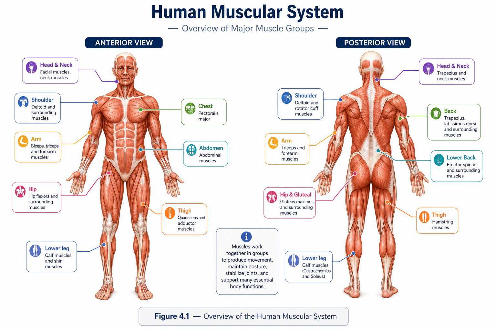
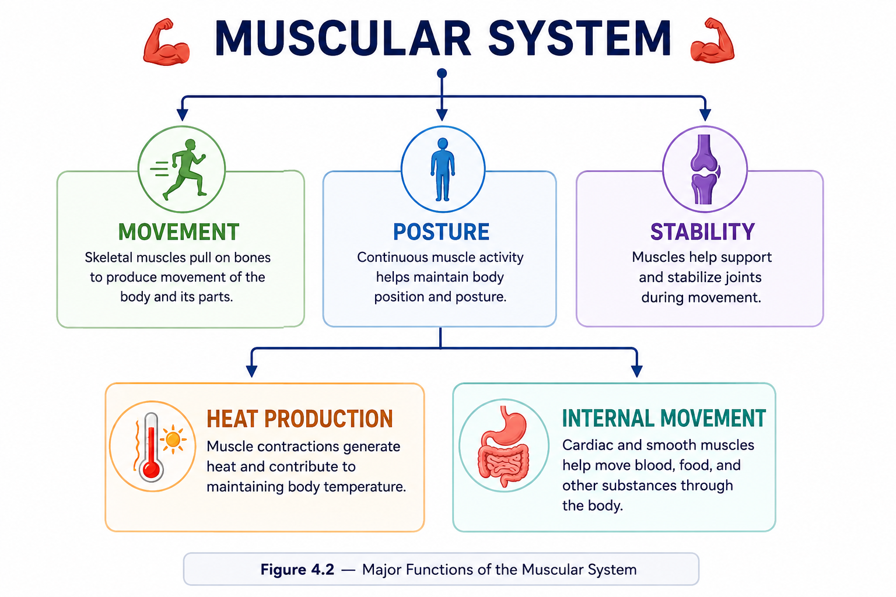
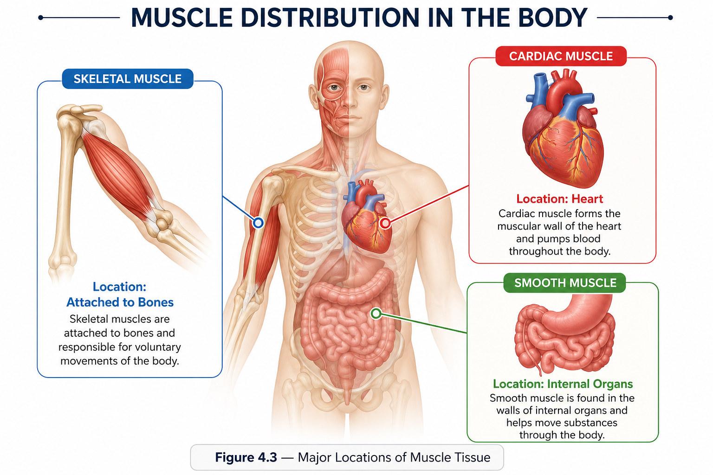
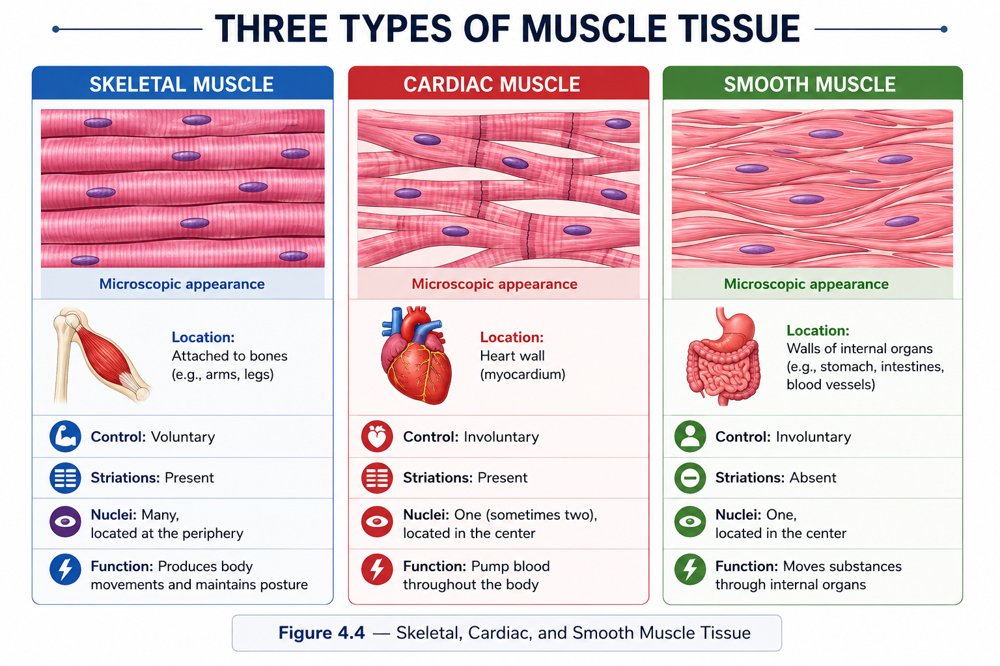
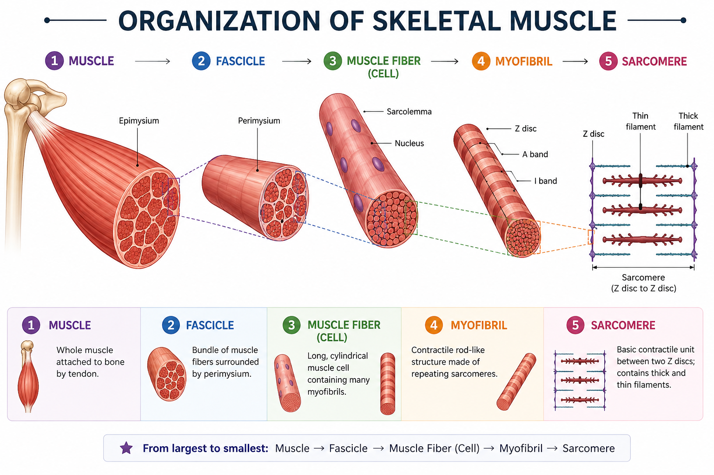
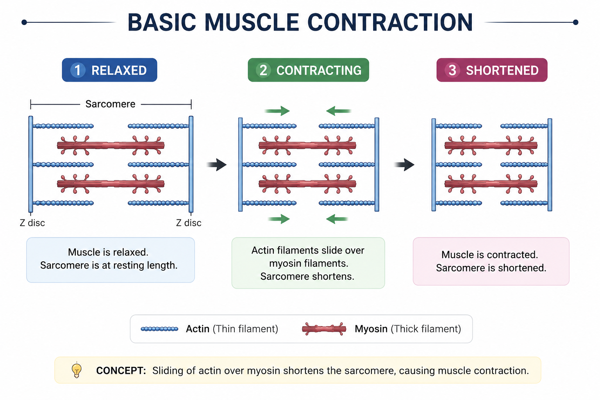
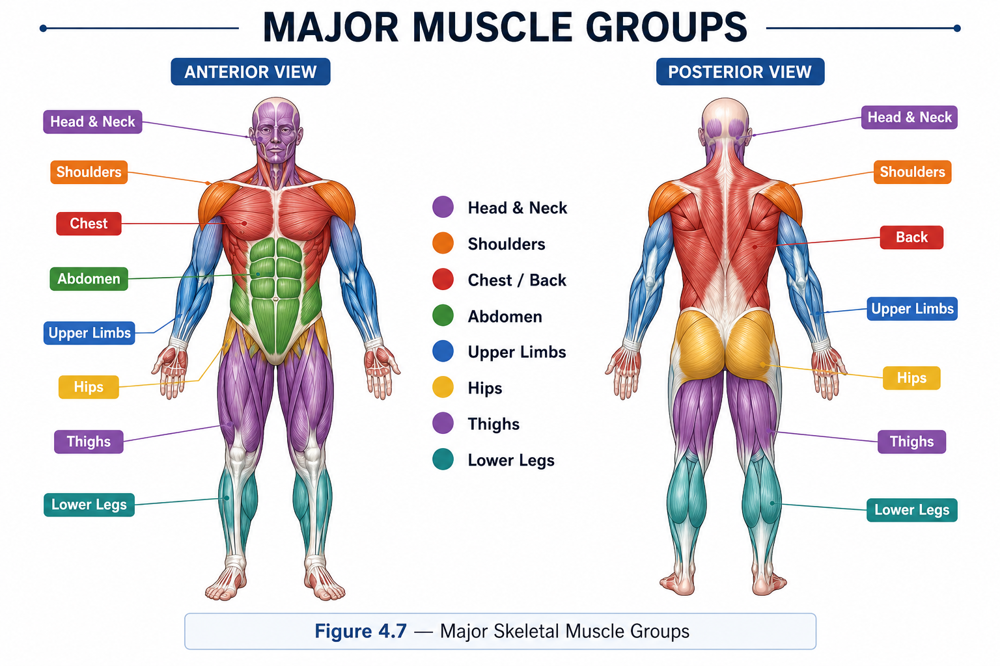

💪 Skeletal Muscle
- Location: Attached to bones
- Control: Usually voluntary
- Function: Body movement
Anatomy • Lesson 4 • Introduction
The muscular system is made up of specialized tissues that enable the body to move, maintain posture, stabilize joints, and produce heat. Muscles also help move substances through internal organs and support many essential body functions.
The human body contains hundreds of muscles that work together with the skeletal and nervous systems to help the body move and function properly.

Figure 4.1 — Overview of the Human Muscular System
Muscles are specialized tissues capable of contraction. When muscles contract, they generate force that can move body structures or help control processes inside the body.
Muscular tissue is found throughout the body. Some muscles are attached to bones, while others form part of organs and structures such as the heart and blood vessels.
The muscular system performs several important functions throughout the body.
Skeletal muscles pull on bones to produce movement of the body and its parts.
Continuous muscle activity helps maintain body position and posture.
Muscles help support and stabilize joints during movement.
Muscle contractions generate heat and contribute to maintaining body temperature.
Cardiac and smooth muscles help move blood, food, and other substances through the body.

Figure 4.2 — Major Functions of the Muscular System
| Function | Main Role |
|---|---|
| 🏃 Movement | Produces movement of the body and its parts. |
| 🧍 Posture | Helps maintain body position. |
| 🔗 Joint stability | Supports and stabilizes joints. |
| 🌡️ Heat production | Generates heat during muscle activity. |
| 🔄 Internal movement | Moves substances through organs and vessels. |
Muscles are distributed throughout the body and are specialized for different types of movement and control.
Attached to bones and responsible mainly for voluntary body movement.
Cardiac muscle forms the muscular wall of the heart and helps pump blood.
Smooth muscle is found in the walls of many internal organs and helps move substances.

Figure 4.3 — Major Locations of Muscle Tissue
Figure 4.3 — Major Locations of Muscle Tissue
Muscle tissue is classified into three major types: skeletal muscle, cardiac muscle, and smooth muscle.

Figure 4.4 — Skeletal, Cardiac, and Smooth Muscle Tissue
| Feature | Skeletal | Cardiac | Smooth |
|---|---|---|---|
| Major location | Bones | Heart | Internal organs |
| Control | Voluntary | Involuntary | Involuntary |
| Striations | Yes | Yes | No |
A skeletal muscle is organized into several levels. Each level contains smaller structures that ultimately include the contractile units responsible for producing force.

Figure 4.5 — Organization of Skeletal Muscle
| Level | Description |
|---|---|
| Muscle | Organ made of muscle tissue. |
| Fascicle | Bundle of muscle fibers. |
| Muscle fiber | Individual muscle cell. |
| Myofibril | Contractile structure inside a muscle fiber. |
| Sarcomere | Basic contractile unit of skeletal muscle. |
Explore further in Lesson 4.2: Skeletal Muscle Anatomy.
Muscles produce movement by contracting. In skeletal muscle, specialized proteins called actin and myosin interact within sarcomeres to generate force.

Figure 4.6 — Basic Concept of Muscle Contraction
Explore further in Lesson 4.3: How Muscles Produce Movement.
The muscular system does not work alone. It interacts closely with several other body systems.
Controls and coordinates muscle activity.
Provides the framework against which skeletal muscles act to produce movement.
Supplies muscles with oxygen and nutrients and carries away metabolic waste.
Skeletal muscles are distributed across major regions of the body. Individual muscles have specialized functions and work together to produce movement.

Figure 4.7 — Major Skeletal Muscle Groups
Explore further in Lesson 4.4: Major Skeletal Muscles & Their Functions.
| Term | Meaning |
|---|---|
| Muscle | Tissue that contracts to produce force. |
| Skeletal muscle | Muscle attached to bones. |
| Cardiac muscle | Muscle tissue found in the heart. |
| Smooth muscle | Muscle tissue found in many internal organs. |
| Muscle fiber | An individual muscle cell. |
| Fascicle | A bundle of muscle fibers. |
| Sarcomere | The basic contractile unit of skeletal muscle. |
Continue through the sub-lessons to explore the muscular system in greater detail.